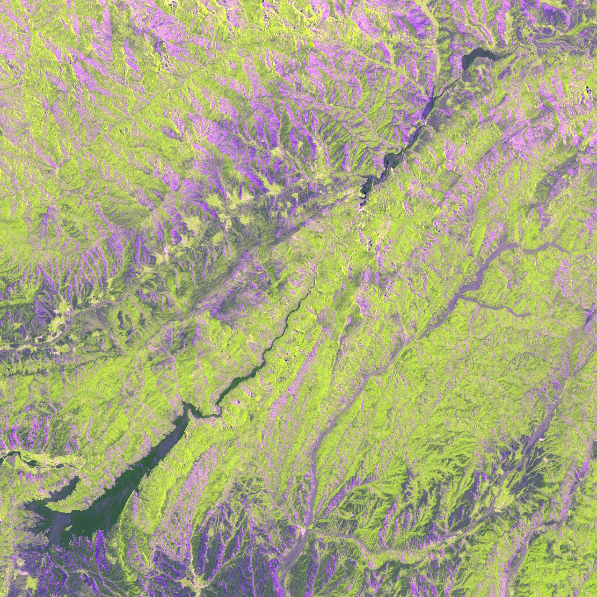
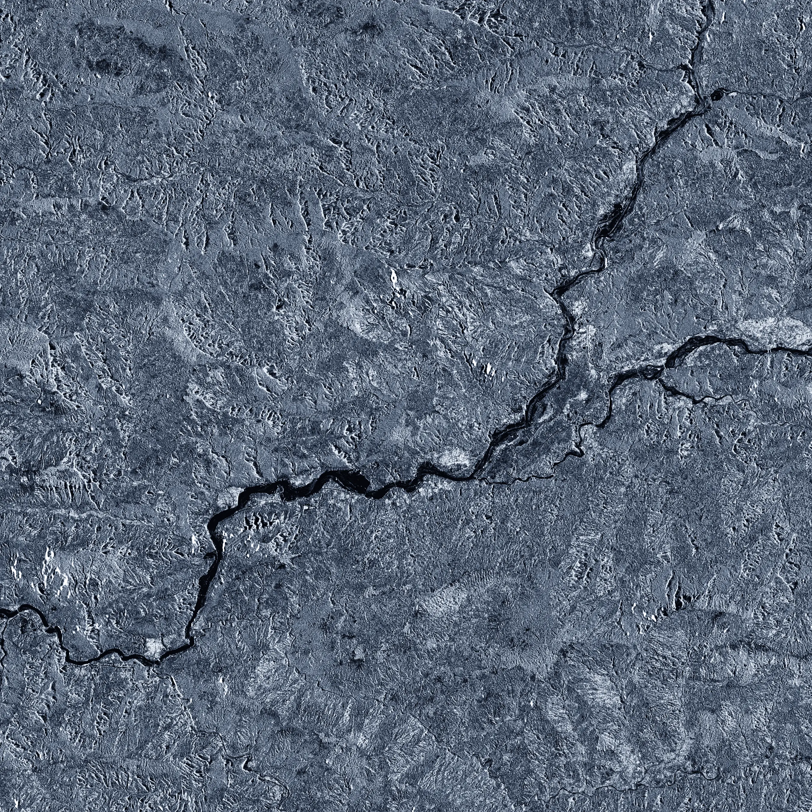
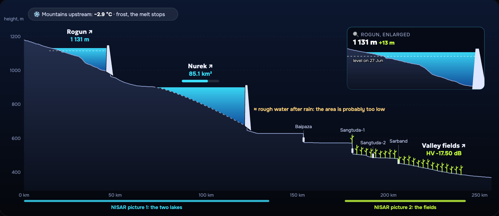
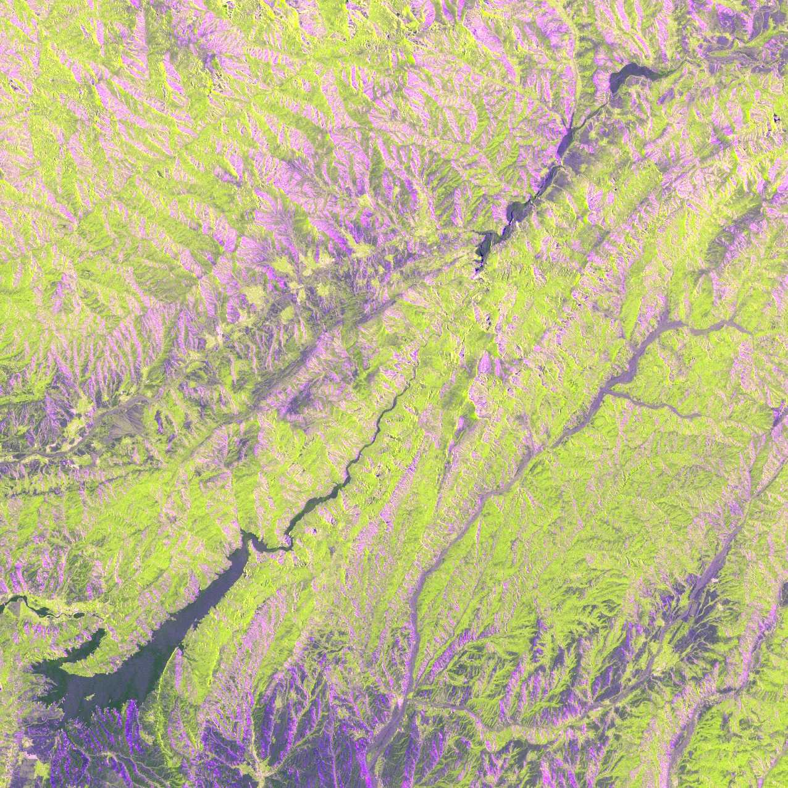
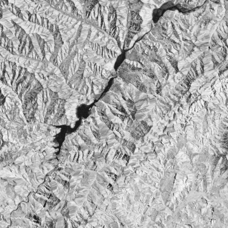
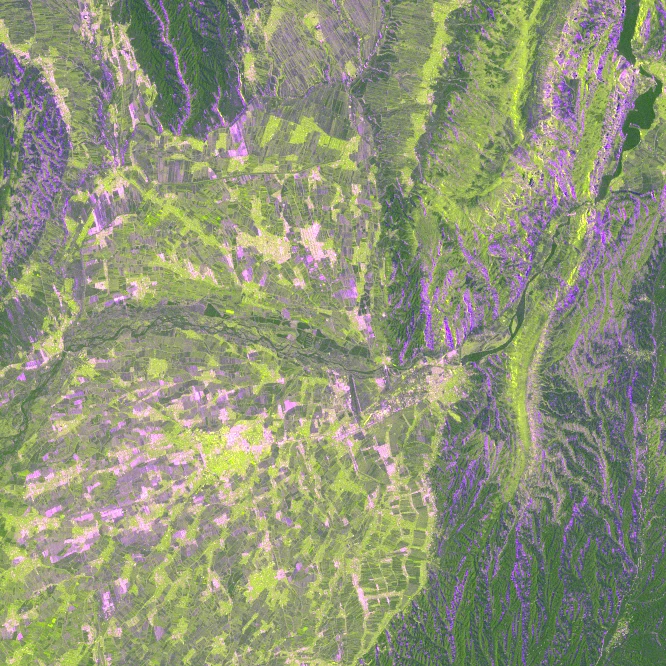
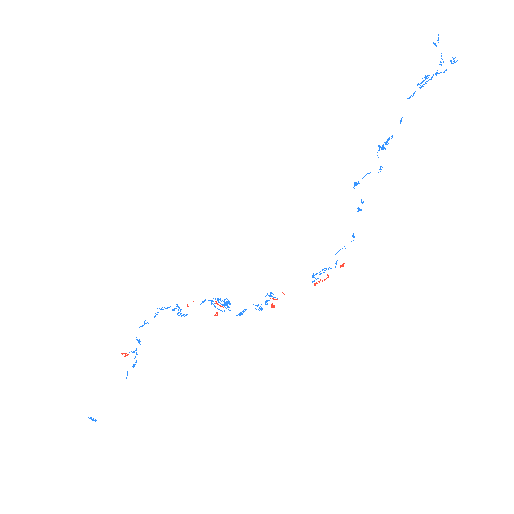

NASA Space Apps Challenge 2026 · Dancing with the SARs
Radar from space, told as a story anyone can read.
Team CIFARSOFT · Tajikistan

The problem
NISAR measures the ground every 12 days. Its pictures are grey, grainy and full of jargon.
We answer three plain questions:
What changed? Where? Why?
Our signature view
The Vakhsh from the side, 257 km: one timeline moves the Rogun level, the Nurek area and the cotton fields together. You can even hear it beat.


WaterRogun and Nurek lakes, Tajikistan, June → October 2026

Ground movementOne slope near the Rogun dam crept in 3.5 months; the dam is stable (InSAR, preliminary)

CropsStronger plant echo over 696 km² of cotton fields as the crops grew

FloodRiver channel changed by the 26 Aug flood in Nepal, mapped under monsoon cloud
How it works
NISAR radar (GCOV, GUNW), 35 pictures to 11 Nov 2026
NASA HLS photos, NASA POWER weather
ISRO · ESA Copernicus DEM · OpenStreetMap
Lakes, crops, flood and movement follow written rules.
Each script first reproduces a known date and prints the agreement.
Guide, time-lapse, before / after, place-by-place answers, printable one-page reports.
English · Русский · Тоҷикӣ · MIT licence
Scientific validity
Rogun's rise is confirmed from a second NISAR orbit, and our pictures match ASF's own browse images.
Every change is compared with dates when nothing happened. In Nepal most brightening is the season, so we do not count it.
Harvested fields are candidates only. A lake value after rain is flagged as rough water. The slope needs a field check.
Impact
ismoil3.github.io/nisar-surface-pulse
Use of AI: Claude (Anthropic) assisted with code and text. No data, measurement or image was generated by AI. Team CIFARSOFT: Amsurur, Murodbek, Ismoil, Abuumar, Ahmad.